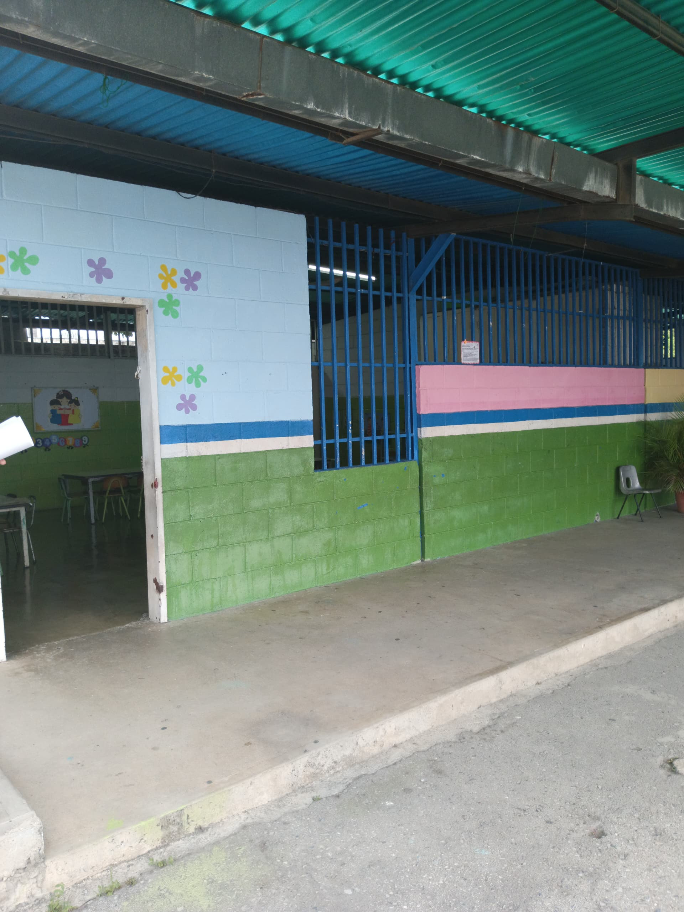

Mi Papagayo Volador
Historia
Inicialmente conocido como Casa Comunal San Antonio, el C.E.I Mi Papagayo Volador fue creado con
el objetivo de brindar atención integral a los niños y niñas en
edad preescolar. A lo largo de los años, se ha consolidado como
un referente en educación inicial en la zona, ofreciendo una educación de
calidad y formando parte activa de la comunidad.
Ubicación e instalaciones
El C.E.I Mi Papagayo Volador se encuentra ubicado en la calle 37 y 38 con carrera 13,
código postal 3001, en la ciudad de [Barquisimeto]. Cuenta con amplias instalaciones
que incluyen aulas equipadas, un patio de recreo y acceso a la cancha múltiple "Edic la 37".
Impacto en la comunidad
Cumple un rol importante como institucion ya que forma parte de los diversos centros educativos de educacion
preescolar. Donde los niños reciben el conocimiento y valores que los formara como seres humanos para lo
largo de su vida